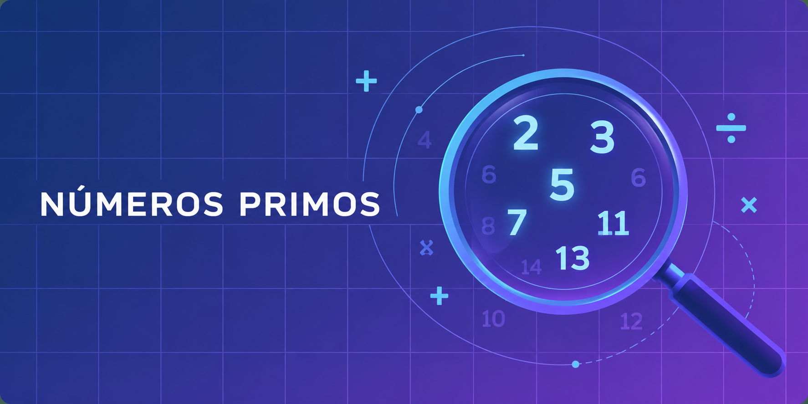

MATEMÁTICAS · 1.º ESO · PRIMER TRIMESTRE
Tema 3 · Los números primos
Aprende los números primos y compuestos, la criba de Eratóstenes, la descomposición en factores primos, la obtención de divisores y los criterios de divisibilidad.

¿Qué es un número primo?
Un número primo es un número natural mayor que 1 que solo es divisible entre 1 y él mismo. Por tanto, tiene exactamente dos divisores positivos.
D(7) = {1, 7}
D(13) = {1, 13}
Los primeros números primos son 2, 3, 5, 7 y 11. El número 2 es el único primo par: cualquier otro par mayor que 2 es divisible entre 2.
Ejemplo del tema: siete galletas
Si repartes 7 galletas en grupos iguales sin que sobren, solo puedes hacer un grupo de 7 o siete grupos de 1. Por eso 7 es primo.
Para comprobar si un número es primo, se comprueba su divisibilidad entre números primos pequeños. Si no encontramos ningún divisor hasta su raíz cuadrada, el número es primo.
Criba de Eratóstenes
La criba de Eratóstenes permite encontrar todos los primos hasta un número determinado eliminando sus múltiplos.
Los 25 primos entre 1 y 100
2, 3, 5, 7, 11, 13, 17, 19, 23, 29, 31, 37, 41, 43, 47, 53, 59, 61, 67, 71, 73, 79, 83, 89 y 97.
En las actividades interactivas puedes realizar la criba paso a paso.
Criba de Eratóstenes: del 1 al 100
Pulsa «Siguiente paso» para descubrir primero el 2, después el 3, el 5 y el 7. Sus múltiplos se van descartando; los números que quedan sin tachar son los primos.
Primos encontrados · Múltiplos descartados
Números compuestos
Un número compuesto es un número natural mayor que 1 que tiene más de dos divisores. Es decir, además de 1 y de sí mismo, se puede dividir exactamente entre otros números.
D(12) = {1, 2, 3, 4, 6, 12}
12 = 3 × 4 = 2 × 6
El número 12 es compuesto porque tiene seis divisores. En cambio, el 7 es primo porque solo tiene dos.
Recuerda
El número 1 no es primo ni compuesto, ya que solo tiene un divisor positivo: él mismo.
Descomposición en factores primos
Todo número natural mayor que 1 se puede expresar como producto de números primos. Para descomponerlo, dividimos sucesivamente entre el menor número primo que lo divida exactamente.
1Divide entre el menor primo posible
Vamos a descomponer el número 42.
422171
237
2Escribe los factores
Cuando llegues al cociente 1, multiplica los factores de la derecha:
42 = 2 · 3 · 7
Si se repite algún factor, puedes escribirlo como potencia.
75 = 3 · 52
60 = 22 · 3 · 5
Obtener todos los divisores de un número
La descomposición en factores primos también permite obtener todos los divisores positivos de un número.
Para conocer los divisores comunes de dos números, hallamos sus divisores por separado y seleccionamos los que aparecen en ambos conjuntos.
Ejemplo
D(18) = {1, 2, 3, 6, 9, 18} y D(24) = {1, 2, 3, 4, 6, 8, 12, 24}. Sus divisores comunes son 1, 2, 3 y 6.
Criterios de divisibilidad
Son reglas que permiten saber rápidamente si un número se puede dividir entre otro sin efectuar la división completa.
| Divisor | Regla | Ejemplo |
|---|---|---|
| 2 | Acaba en 0, 2, 4, 6 u 8. | 452 |
| 3 | La suma de sus cifras es múltiplo de 3. | 102: 1 + 0 + 2 = 3 |
| 5 | Acaba en 0 o 5. | 265 |
| 7 | Al restar al número sin unidades el doble de la cifra de unidades, se obtiene 0 o un múltiplo de 7 (puede repetirse el proceso). | 224: 22 − 2 · 4 = 14 |
| 11 | La diferencia entre las sumas de las cifras en posiciones alternas es 0 o múltiplo de 11. | 539: (5 + 9) − 3 = 11 |
Si un número es divisible entre 2 y entre 3, también lo es entre 6. De manera semejante, para 10 comprobamos 2 y 5, y para 21 comprobamos 3 y 7.
Ejemplo del documento: ¿812 es divisible entre 7?
81 − 2 · 2 = 77. Como 77 es múltiplo de 7, 812 sí es divisible entre 7.
Otro ejemplo: 4327 y el 11
(7 + 3) − (2 + 4) = 4. Como 4 no es múltiplo de 11, 4327 no es divisible entre 11.